clear
Résultats d'analyse
Ces résultats sont issus d'une analyse d'un flux OpenData fourni par JCDecaux du 3 au 27 octobre 2016. Ils répondent à des KPI précises mentionnées dans les attentes du projet données par notre client.
 Afficher les aperçus Qlik Sense
Afficher les aperçus Qlik Sense
KPI #01 : Quelles stations ont le plus grand nombre d'utilisations au cours d'une journée ?
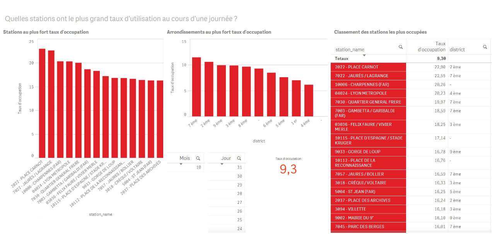
KPI #02 : Quelles stations sont les moins utilisées pendant une journée ?
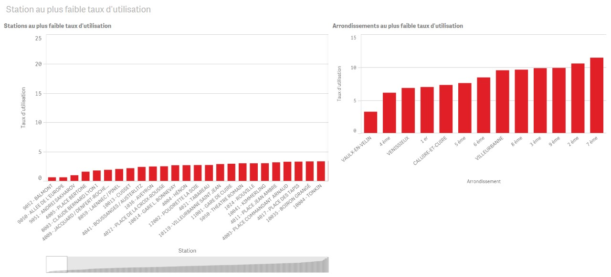
KPI #03 : Quel est le nombre de stations apparaissant sans vélo à au moins un moment de la journée ?
KPI #04 : Combien de stations sont au moins une fois pleine dans une journée ?
KPI #05 : Quel est le nombre de vélos disponibles tout au long de la journée ?
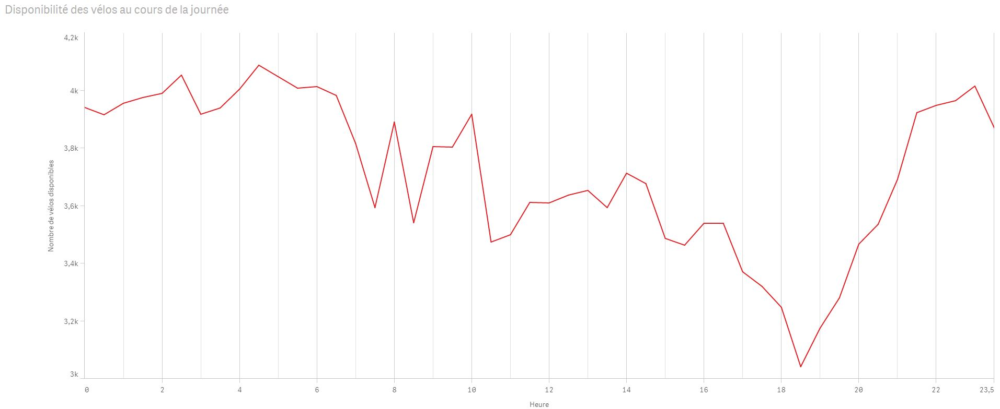
KPI #06 : A quelles heures y a-t-il le plus de vélos utilisés ?
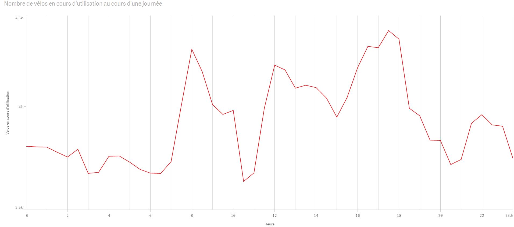
KPI #07 : Combien de vélos sont utilisés selon la météo ?
KPI #08 : Les stations les plus actives le sont-elles indépendamment de la météo ?
KPI #09 : Combien d'emplacements sont en panne le long de la semaine ?

KPI #10 : Quelles stations ont le plus grand nombre de vélos en panne dans une semaine ?
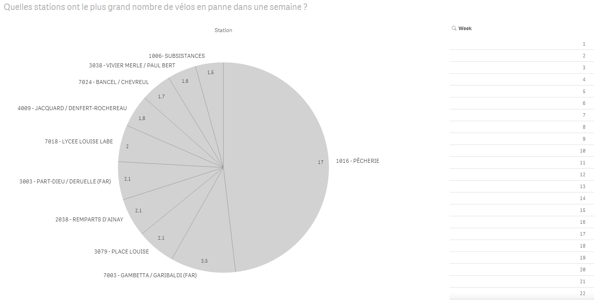
KPI #11 : Quelles stations sont le plus souvent vides ?
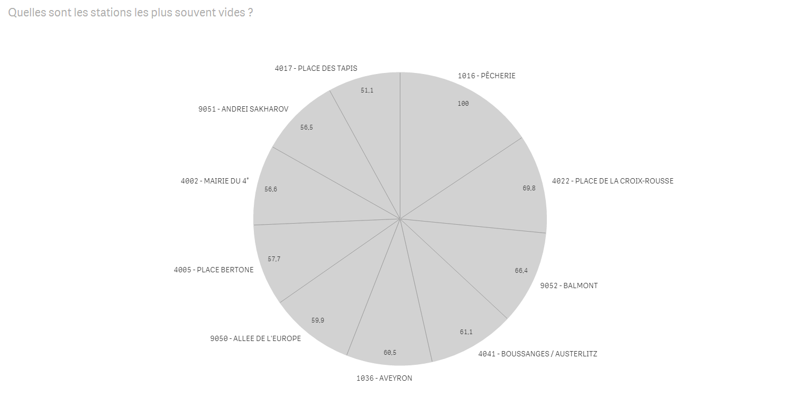
KPI #12 : Quelles sont les stations qui sont le plus souvent pleines ?
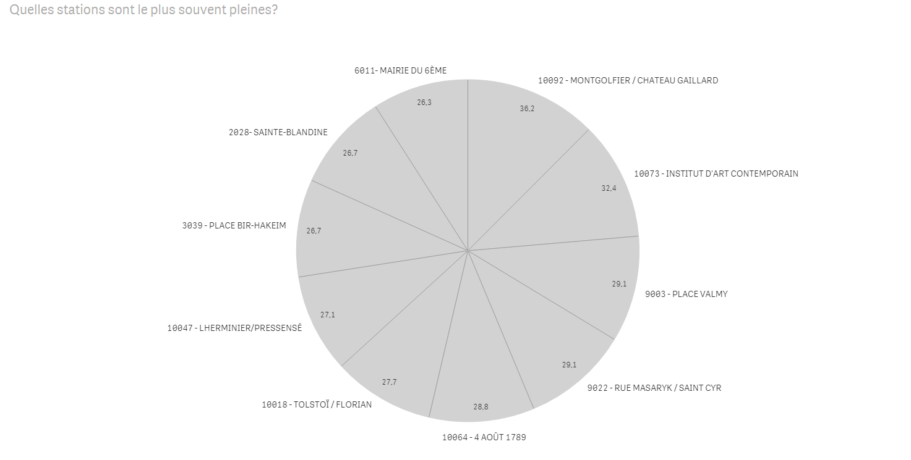
KPI #13 : Comment sont utilisées les stations selon le jour de la semaine ? (avec échantillon par heure)
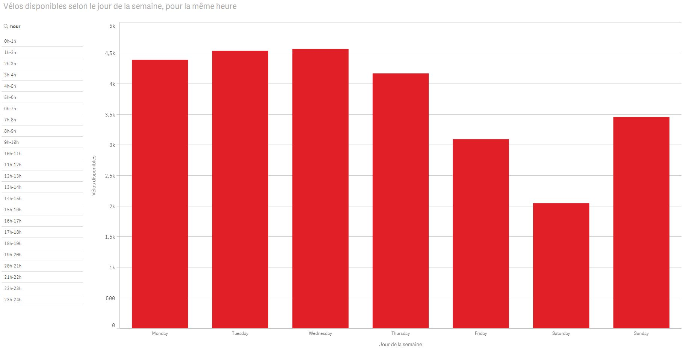
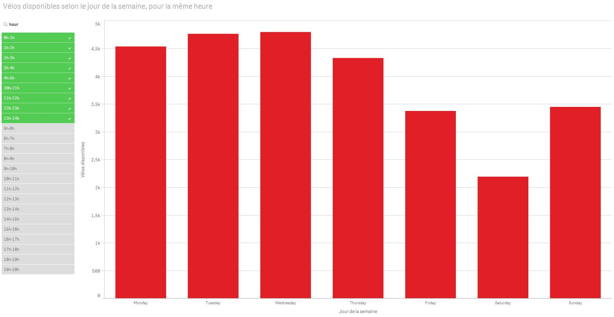
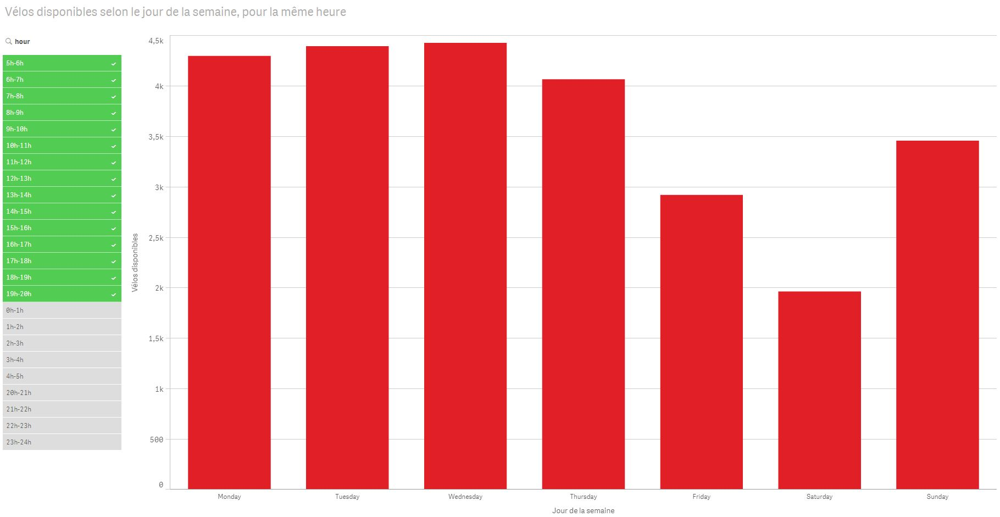
KPI #14 : Quelle est l'utilisation des stations selon les semaines ? (avec échantillon par jour)
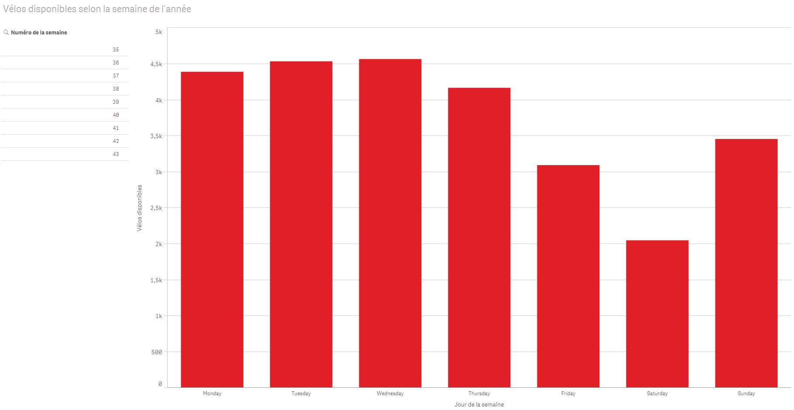
KPI #15 : Combien y a-t-il de stations par habitant ? (avec échantillon par arrondissement)
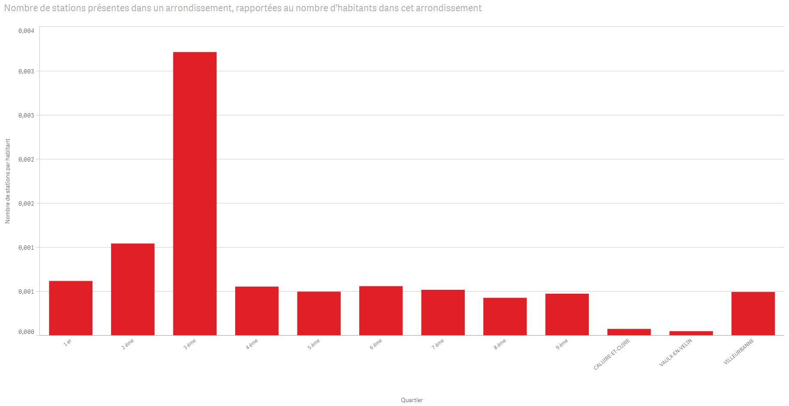
KPI #16 : Quel est le nombre de vélos disponibles par habitant selon l'arrondissement ?
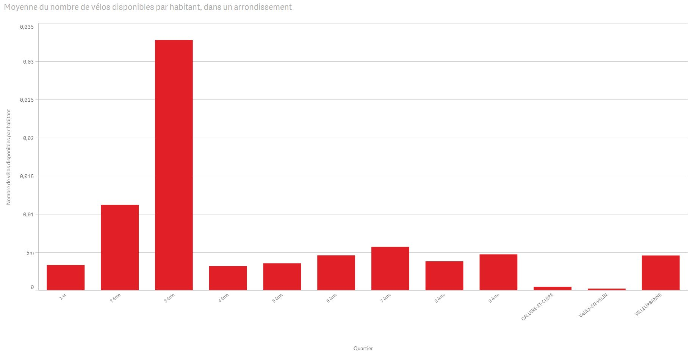
KPI #17 : Combien y a-t-il de vélos disponibles en moyenne pour chaque station au cours de la journée ?
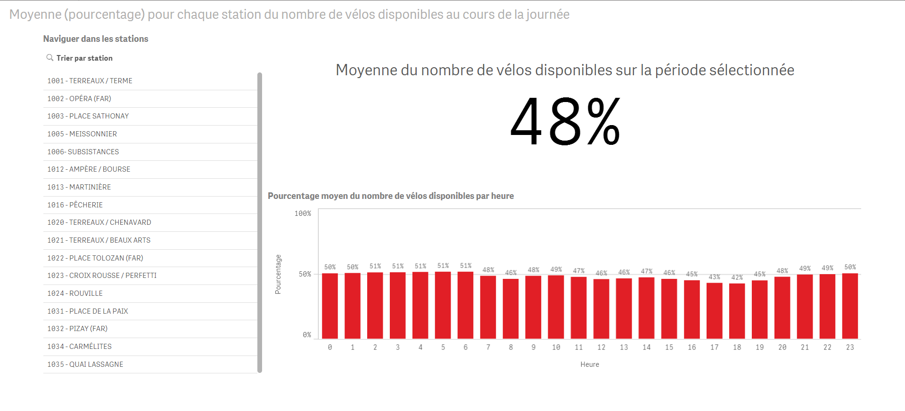
KPI #18 : Quel est le taux de places vides pour chaque station pendant la journée ?
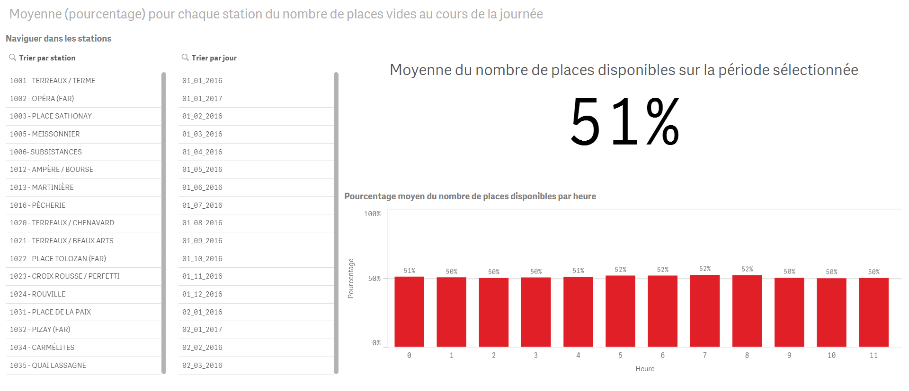
KPI #19 : Les stations voisines (moins de 200 mètres) ont-elles une activité similaire ?
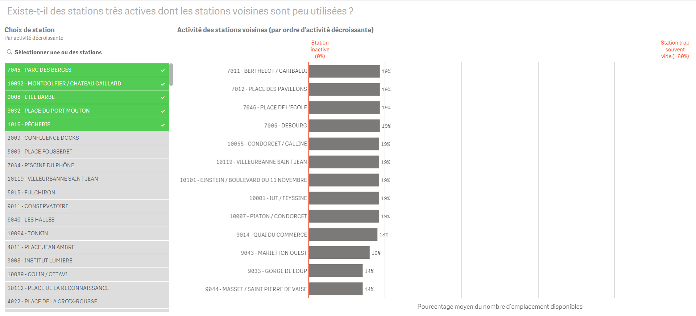
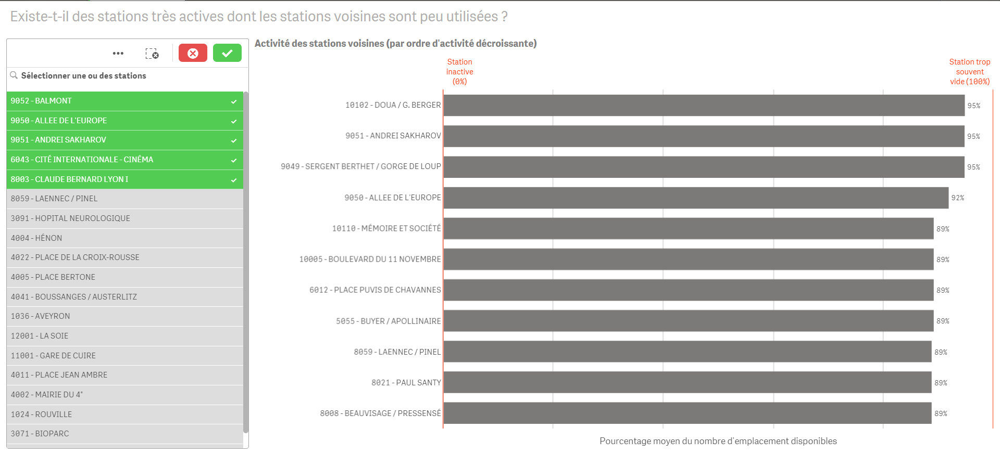
KPI #20 : Existe t-il des stations très actives dont les stations voisines (à moins de 200 mètres) sont peu utilisées ?
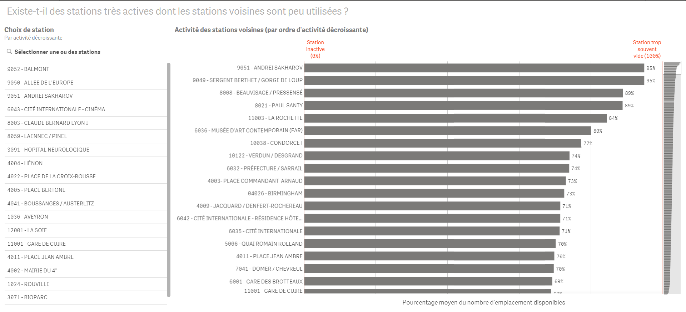
KPI #21 : Combien de temps en moyenne une station vide reste vide ?
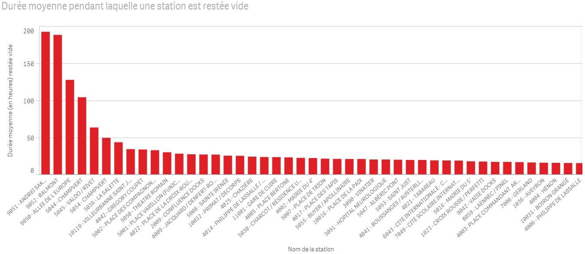
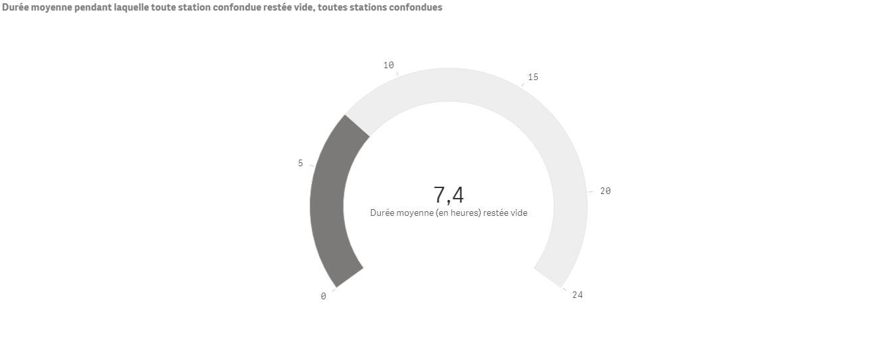
KPI #22 : Quelle est la durée moyenne durant laquelle une station reste pleine ?
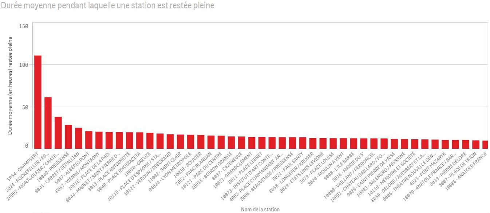
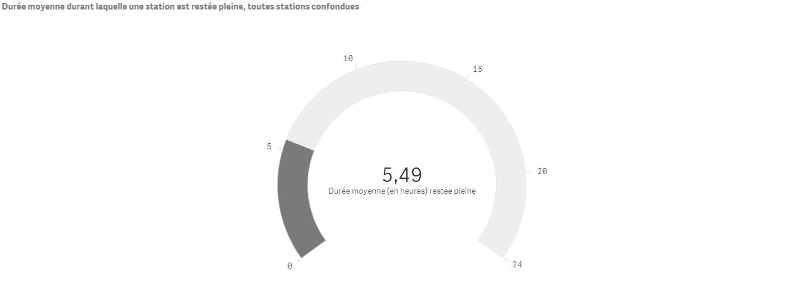
KPI #23 : Existe t-il une corrélation entre la température moyenne et l'utilisation des stations ?
KPI #24 : Y a-t-il un lien entre les précipitations moyennes dans l'agglomération et le nombre d'utilisations ?